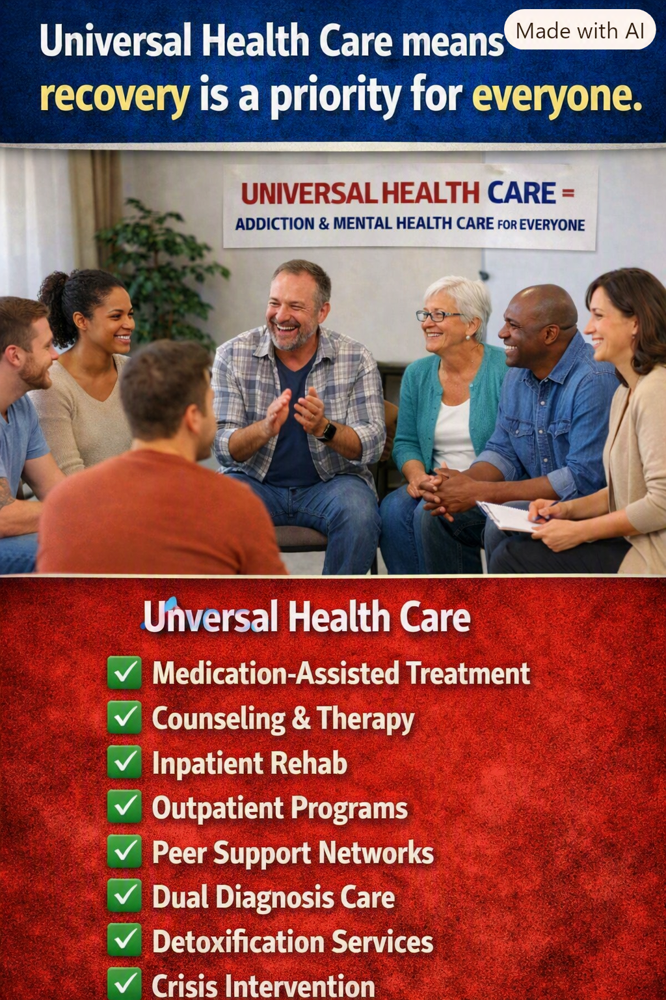

Article 38: Recovery Is a Priority for Everyone
Mental health, addiction treatment, and the opportunity to recover

Download illustrated Word document (.docx)
Universal healthcare must include mental health and addiction treatment—not as an afterthought, but as essential medical care.
A vision for Medicare for All • November 2026
Healthcare Is Not Complete Without Mental Healthcare
When someone breaks a bone, develops pneumonia, or experiences a stroke, we expect the healthcare system to help them recover. Depression, anxiety, substance use disorders, and other behavioral health conditions deserve the same seriousness, compassion, and continuity of care. Yet too many Americans face insurance restrictions, unaffordable bills, provider shortages, and fragmented treatment when they seek help.
The promise of Medicare for All is not simply an insurance card. It is the opportunity to build a healthcare system in which the first question is “What care will help this person recover?” rather than “What will their insurance allow, and can they afford it?”
Addiction Is a Health Condition, Not a Moral Failure
Substance use disorders can affect people of every age, income, neighborhood, and background. Evidence-based treatment may involve medications, counseling, behavioral therapies, peer support, and sustained follow-up. Some people need residential or inpatient services; others recover with outpatient care. Treatment should respond to clinical needs rather than a one-size-fits-all rule.
Recovery is rarely a straight line. A return to substance use should prompt renewed support and reassessment, not abandonment. Families also need education, practical help, and access to care without shame.
What Comprehensive Coverage Should Include
Medication-assisted treatment, including clinically appropriate medications for opioid and alcohol use disorders.
Counseling, psychotherapy, psychiatric care, and medication management.
Medically necessary inpatient and residential treatment, along with outpatient and intensive outpatient programs.
Safe, clinically supervised withdrawal management when indicated.
Crisis intervention, emergency stabilization, and timely follow-up.
Integrated treatment for people living with both mental health and substance use disorders.
Peer recovery support, care coordination, and family education.
Care Must Continue Beyond a Crisis
A person discharged from a hospital or rehabilitation program may still need months or years of treatment, medication, counseling, housing support, and community connections. Insurance changes, narrow networks, and unexpected costs can interrupt that progress. Universal coverage could remove many financial barriers and make continuity of treatment easier—provided the system also invests in trained professionals, facilities, and community-based services.
Why This Matters to the Whole Country
Untreated mental illness and addiction can contribute to preventable emergencies, family disruption, lost productivity, disability, and premature death. Effective treatment can improve health and help people return to work, school, relationships, and community life. The human benefit comes first; economic benefits may follow.
A better system should also reduce the burden on emergency departments, first responders, and families who currently struggle to locate affordable, appropriate care. But coverage alone will not solve workforce shortages or guarantee immediate access. Payment policy, rural access, prevention, quality oversight, and treatment capacity must be part of reform.
What Medicare for All Would—and Would Not—Automatically Guarantee
Medicare for All is a proposal for universal coverage, not a program currently in effect. The precise benefits would depend on the legislation enacted and the rules used to implement it. This article advocates including the full continuum of medically appropriate mental health and addiction services, with no premiums, deductibles, or point-of-service copayments. It does not claim that every proposed bill already guarantees every service shown in the accompanying illustration.
Clinical safeguards would still matter. Not every intervention is appropriate for every patient, and effective care requires evidence-based standards, informed consent, and professional judgment. The goal is to remove financial obstacles—not to eliminate medical decision-making.
The Choice Before Us
America can continue treating mental health and addiction as separate problems to be navigated through a maze of insurance rules, or it can make recovery a central commitment of universal healthcare. A person seeking help should encounter an open door, not a financial warning sign.
Recovery is a priority for everyone. No one should be priced out of the chance to get well.
There is no them, only us.
Share This Article
Help others explore the ideas and evidence behind Medicare for All.
When posting on Facebook, paste these hashtags into your post text. Sharing services may not automatically include them.